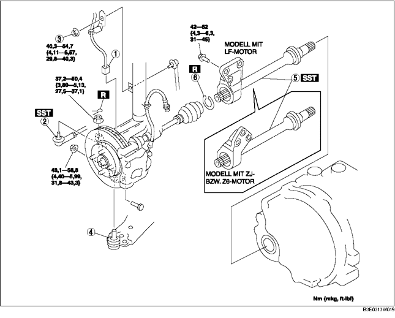

1. Das Getriebeöl ablassen. (Siehe GETRIEBEÖLWECHSEL [F35M-R].) (Siehe WECHSEL DES AUTOMATIKGETRIEBEÖLS.)
2. Gemäß der Reihenfolge in der Tabelle ausbauen.
3. Der Einbau erfolgt in umgekehrter Reihenfolge.

.
|
1
|
Steckverbinder des ABS-Raddrehzahlsensors
|
|
2
|
Kugelgelenk, Spurstangenkopf
|
|
3
|
Obere Mutter des Stabilisatorverbindungsgelenks
|
|
4
|
Kugelgelenk des unteren Vorderrad-Querlenkers
|
|
5
|
Zwischenwelle
(Siehe Ausbauhinweis für Zwischenwelle.)
|
|
6
|
Sicherungsring
(Siehe Einbauhinweis für Sicherungsring.)
|
1. Die Antriebswelle (R) von der Zwischenwelle lösen, dazu mit einer Messingstang und Hammer gegen den Außenlaufring am Getriebe schlagen.
2. Die Zwischenwellenhalterung vom Zylinderblock lösen und die Zwischenwelle abnehmen.
3. Das SST nach dem Entfernen der Zwischenwelle am Getriebe befestigen.
1. Den Vorgaben entsprechend einen neuen Zwischenwellensicherungsring, mit der Öffnung nach oben, am Ende der Zwischenwelle in die Ringnut einsetzen.
2. Nach Montieren des Sicherungsrings dessen Außendurchmesser messen.